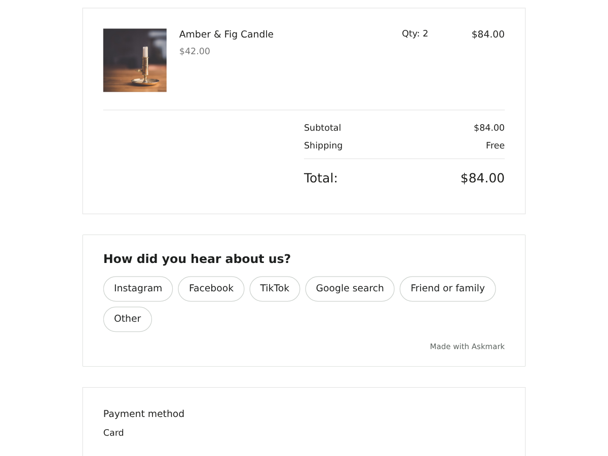

Askmark
How did you hear about us? Sales by channel
- One tap question on your Thank You page
- Each answer saved with its order total
- See which channel brings orders and sales
- Your own question and answers (Premium)

What it does
Right after checkout, your buyer sees one short question under their order on the Thank You page: "How did you hear about us?". They tap Instagram, Facebook, TikTok, Google search, Friend or family, or Other, where they can type a few words. A thank-you line replaces the question. Nobody has to answer, and nothing pops up.
Each answer is saved together with its order number and order total. The total comes from the order itself, so instead of vote counts you see something like 14 orders from Instagram worth $1,240 (revenue is on Premium). That is the number you want before moving ad money between channels.
The dashboard lists every answer with its share of orders, the text people typed under Other, and a date range. Premium adds revenue per channel, results for any period instead of the last 30 days, a CSV download, and your own question with up to 10 answers, such as "What made you order today?".
Answers are only taken for orders placed in the last two hours, one per order. Changing an answer overwrites it. No names, emails or addresses are stored.
The free plan shows a small credit link under the question. Premium removes it.
Price
Free
- How did you hear about us, 6 answers
- Orders per answer, last 30 days
- Other answers with typed text
- Small credit link
Premium
$6/month, 20% off yearly ($4.80/month billed yearly). Hidden pre-made plan "Premium" (vendorId premium) stays hidden
- Your own question, up to 10 answers
- Revenue per channel, all-time results
- CSV download of every answer
- Remove the credit link